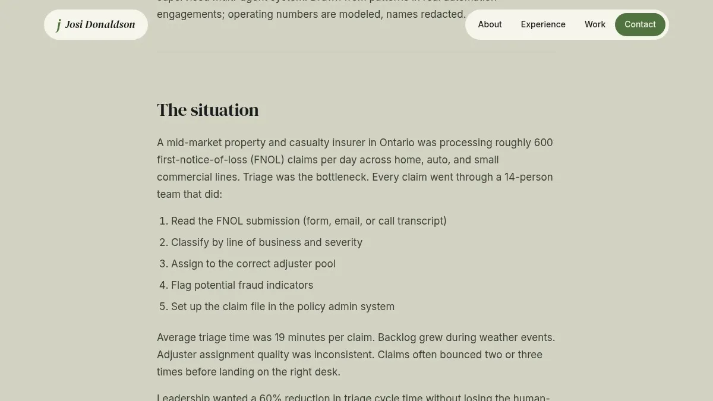
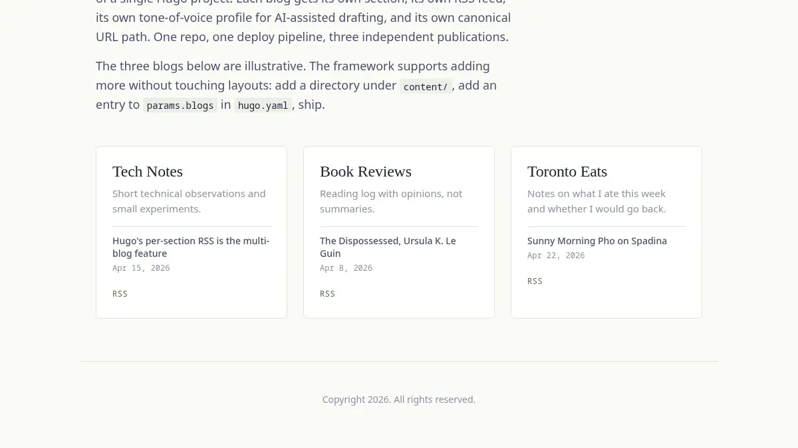
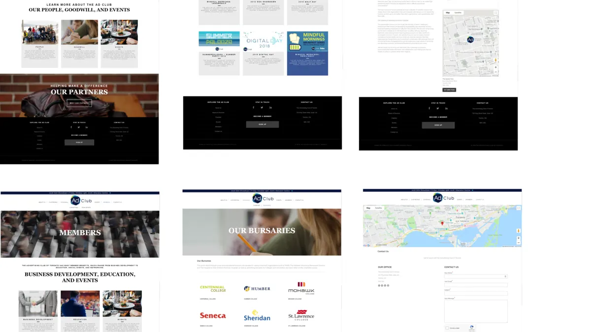
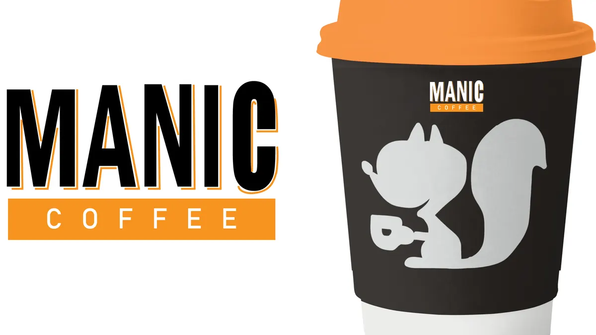

Solutions Architect & AI Automation Consultant.
I help mid-market and enterprise teams design, scope, and ship AI and automation work that actually moves operational numbers.
- Engagement model
- 4-week pilots through 6-month builds. Fixed-price, milestone, or hourly.
- Currently focused on
- Multi-agent claims and document workflows for regulated industries.
- Recent
- Reference architecture for a 14-FTE claims-triage replacement. Case study.
I bridge the language gap between business stakeholders, UX, and engineering, and I ship.
Ten years of work, nine through management consulting at Deloitte and Cognizant. Selected clients: TD, Intact, Questrade, Sonnet Insurance, Aon, Loblaws, Government of Canada, Microsoft, Google. My background is requirements engineering and automation strategy. My recent work is agentic AI and orchestration.
I take on a small number of select freelance engagements where the scope fits my background and the work matters. Discovery to delivery, not just advisory.
AI Agent Development
I build agentic systems for teams who need AI that does the work, not AI that talks about it. Anthropic API, n8n, agent orchestration, retrieval and tool-use, evals. From single-agent pilots to multi-agent fleets.
Automation & RPA
UiPath, BluePrism, custom Python pipelines. 80+ implementations delivered. I focus on the boring 80% that actually saves the hours: claims triage, document understanding, integration glue, exception handling. Production-grade, monitored, owned.
Solutions Architecture
Cross-system integration, technology evaluation, ROI modeling, agile delivery. The work that turns a stakeholder's "we should automate this" into a scoped plan with billable milestones.
Ten years of work, nine across banking, insurance, and consulting.
Solutions Architect
Senior BA and technology consultant for enterprise financial-services clients. Lead requirements discovery, customer-journey analysis, and automation strategy across digital-transformation programs.
RPA Technical Lead and Manager
Built and led the team delivering enterprise automation. Designed automation architecture, deployed 50+ UiPath workflows, built monitoring dashboards in Kibana and ElasticSearch, managed orchestrator and SQL infrastructure. Acted as Solutions Architect on M&A integrations for CTC and ThinkInsure.
Senior Consultant
Engagements as Agile Coach, DevOps Consultant, Release Manager, Business Analyst, and Full-Stack Developer. Facilitated Agile transformations and CI/CD adoption.
BSc Honours, University of Toronto
Intended pre-med. Discovered programming through statistics work and pivoted into software via HarvardX and self-directed study (2017).
What I work with.
AI & Automation
- Anthropic API
- n8n
- UiPath
- BluePrism
- ABBYY FlexiCapture
- Document Understanding
Cloud & Data
- AWS
- Google Cloud
- TensorFlow
- ElasticSearch
- Kibana
- Python
- SQL
Web & Static
- Hugo
- Cloudflare Pages
- Node
- JavaScript
- HTML / CSS
Process & Delivery
- Agile / Scrum
- CSM (2024)
- Jira
- Confluence
- ServiceNow
- ROI modeling
Recent and representative.
A mix of deep architectural work, deployed reference systems, and earlier full-stack engagements. Click through for case studies and live demos.
-
01
Case study · AI architecture · 2026
Multi-Agent Claims Triage for Mid-Market Insurance
Reference architecture for replacing a 14-FTE triage team with a supervised multi-agent system. 79% reduction in median triage time. Modeled $2.1M annual savings.
Read the case study
-
02
Live demo · Hugo + Anthropic + Cloudflare
Multi-Blog Framework
Hugo framework for running multiple distinct blogs from one repo. Per-section RSS, per-section tone profiles, Anthropic-assisted drafting, Cloudflare Pages deploy. Live demo with three publications.
Open the demo
-
03
Impact study · Anonymized · Insurance
Enterprise RPA Rollout
Discovery and rollout of enterprise automation for a top-five Canadian insurer. 50+ workflows deployed in UiPath. Monitored dashboards in Kibana. Names and account-specifics redacted per professional discretion.
Discuss a similar rollout -
04
Web design + dev · WordPress
AdClub of Toronto
Full website redesign and build for the not-for-profit advertising association of Toronto. Custom theme, responsive across devices.
Visit adclub.ca
-
05
Web design · Hospitality
Manic Coffee
Local coffee shop site refresh. Clean responsive design, photography-led layout, optimized for mobile ordering flows.
Details available on request
Have a project worth scoping?
I review every inquiry personally and reply within two business days.